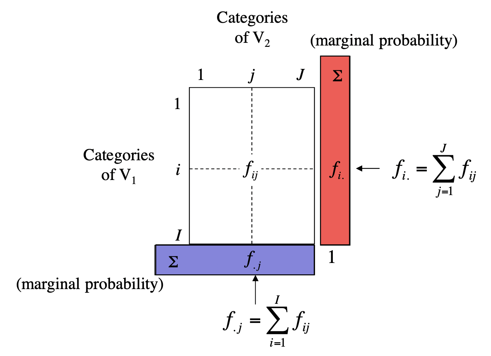

# used packages
library(tidyverse) # base tidy data tools
library(tidytext) # text mining; gets along with tidyverse
library(janeaustenr) # Jane Austen's novels
library(FactoMineR) # Multivariate Statistics methodsCorrespondence Analysis 1
UC Berkeley, STAT 133, Fall 2024
This is a companion file to the Stat 133 lectures on “Text Mining”. You’ll need the following packages:
1 Jane Austen’s Novels
As you know, the package "janeaustenr" contains the six novels by Jane Austen:
- Emma
- Mansfield Park
- Northanger Abbey
- Persuasion
- Pride and Prejudice
- Sense and Sensibility
The text of each novel is available in vector format: e.g. prideprejudice, emma, persuasion. But you can also find the text of all six novels in a single data frame (tibble) by using the function austen_books()
austen_books()2 Detecting Associations with Correspondence Analysis (CA)
Say we are interested in studying the use of punctuation symbols across all Austen’s novels:
- commas:
"," - semicolons:
";" - colons:
":" - quotations:
'\\"' - apostrophes:
"'" - question marks:
"?" - exclamation symbols:
"!" - dashes (pairs):
"--"
We can use str_count() to count the frequencies of these types of symbols, and then get the their total sum for each book:
crosstable = austen_books() |>
mutate(
commas = str_count(text, ","),
colons = str_count(text, ":"),
semicolons = str_count(text, ";"),
quotes = str_count(text, '\\"'),
apostrophes = str_count(text, "'"),
questions = str_count(text, "\\?"),
exclamations = str_count(text, "\\!"),
dashes = str_count(text, "--")
) |>
group_by(book) |>
summarise(
commas = sum(commas),
colons = sum(colons),
semis = sum(semicolons),
quotes = sum(quotes),
aposts = sum(apostrophes),
quests = sum(questions),
bangs = sum(exclamations),
dashes = sum(dashes)
)
crosstable# A tibble: 6 × 9
book commas colons semis quotes aposts quests bangs dashes
<fct> <int> <int> <int> <int> <int> <int> <int> <int>
1 Sense & Sensibility 9900 66 1572 3084 914 451 561 1178
2 Pride & Prejudice 9132 132 1538 3531 741 462 499 395
3 Mansfield Park 12439 339 2260 3292 1135 471 496 413
4 Emma 12020 174 2353 4189 1226 621 1063 3100
5 Northanger Abbey 6085 83 1172 2151 545 392 433 419
6 Persuasion 7025 130 1320 1565 582 217 318 142The above table, technically speaking, is an example of a cross-table, also referred to as a 2-way table or a contingency table. The important thing about this table is that it contains counts, which in turn are non-negative numbers.
From a statistical point of view, this table is the result of crossing the categories of 2 qualitative (i.e. categorical) variables:
Variable \(V_1\): name of book or novel
Variable \(V_2\): type of punctuation symbol

With this kind of table, we could ask questions like:
Is there an association between books and punctuation symbols?
Do some books tend to have more (or less) of a certain punctuation symbol?
To answer this kind of questions, we can use a statistical multivariate method known as Correspondence Analysis (CA).
Originally, CA was developed to analyze contingency tables in which a sample of observations is described by two nominal variables, but it was rapidly extended to the analysis of any data table with non-negative entries.
On a side note, we should mention that CA was often discovered (and rediscovered), and so variations of CA can be found under several different names such as “dual scaling,” “optimal scaling,” “homogeneity analysis,” or “reciprocal averaging.” The multiple identities of correspondence analysis are a consequence of its large number of properties, that answer a lot of apparently different problems.
3 Table of relative frequencies
In order to explain Correspondence Analysis, and also to simplify some of the computations on the data in crosstable, it’s better if we reformat this object as a matrix:
# cross-table in matrix format
X = as.matrix(crosstable[,-1])
rownames(X) = str_extract(crosstable$book, "\\w+")
X commas colons semis quotes aposts quests bangs dashes
Sense 9900 66 1572 3084 914 451 561 1178
Pride 9132 132 1538 3531 741 462 499 395
Mansfield 12439 339 2260 3292 1135 471 496 413
Emma 12020 174 2353 4189 1226 621 1063 3100
Northanger 6085 83 1172 2151 545 392 433 419
Persuasion 7025 130 1320 1565 582 217 318 142
3.1 Relative Frequencies or Probabilities
The first step involves converting the frequencies or counts in X into relative frequencies (i.e. proportions) by dividing the cells in X over the total count of punctuation symbols:
Xprobs = X / sum(X)
round(Xprobs, 4) commas colons semis quotes aposts quests bangs dashes
Sense 0.0967 0.0006 0.0154 0.0301 0.0089 0.0044 0.0055 0.0115
Pride 0.0892 0.0013 0.0150 0.0345 0.0072 0.0045 0.0049 0.0039
Mansfield 0.1216 0.0033 0.0221 0.0322 0.0111 0.0046 0.0048 0.0040
Emma 0.1175 0.0017 0.0230 0.0409 0.0120 0.0061 0.0104 0.0303
Northanger 0.0595 0.0008 0.0115 0.0210 0.0053 0.0038 0.0042 0.0041
Persuasion 0.0687 0.0013 0.0129 0.0153 0.0057 0.0021 0.0031 0.0014You can think of the proportions in Xprobs as joint probabilities. For instance, the probability of Sense and Sensibility AND commas is about 0.0967
\[ Prob(V_1 = \text{Sense} \ \text{ AND } \ V_2 = \text{commas}) \approx 0.0967 \]
The following diagram illustrates a table of probabilities derived from the cross-table between two variables \(V_1\) and \(V_2\). The relative frequency between the \(i\)-th category of \(V_1\) and the \(j\)-th category of \(V_2\) is denoted as \(f_{ij}\)
\[ f_{ij} = \frac{x_{ij}}{n} \]
3.2 Marginal Probabilities
From the table of probabilities \(f_{ij}\), we can calculate marginal probabilities.

Column Margin. The column margin, depicted in blue in the preceding figure, with its \(j\)-th term denoted as \(f_{.j}\) is given by the sum of all the entries in each column, column by column:
\[ f_{.j} = \sum_{i=1}^{I} f_{ij} \]
These marginal probabilities can be easily obtained with colSums()
# column margin
col_margin = colSums(Xprobs)
round(col_margin, 4)commas colons semis quotes aposts quests bangs dashes
0.5531 0.0090 0.0998 0.1741 0.0503 0.0255 0.0329 0.0552 Think of this proportions as marginal probabilities:
\[ Prob(V_2 = \text{commas}) \approx 0.5531 \]
Row Margin. The row margin, depicted in red in the preceding figure, with its \(i\)-th term denoted as \(f_{i.}\) is given by the sum of all the entries in each row, row by row:
\[ f_{i.} = \sum_{j=1}^{J} f_{ij} \]
These marginal probabilities can be easily obtained with rowSums()
# row margin
row_margin = rowSums(Xprobs)
round(row_margin, 4) Sense Pride Mansfield Emma Northanger Persuasion
0.1732 0.1606 0.2037 0.2418 0.1102 0.1104 Think of this proportions as marginal probabilities:
\[ Prob(V_1 = \text{Sense}) \approx 0.1732 \]
4 Independence Model
Let’s review the kind of probabilities that we have so far:
joint probabilities: \(f_{ij}\)
marginal probability of rows: \(f_{i.}\)
marginal probability of columns: \(f_{.j}\)
From basic probability rules, we know that if two events \(A\) and \(B\) are independent, their joint probability \(P(A \text{ and } B)\) is given by the product of the marginal probabilities, that is:
\[ P(A \text{ and } B) = P(A) \times P(B) \]
In other words, if the \(i\)-th row is independent from the \(j\)-th column, the joint probability \(f_{ij}\) is given by
\[ f_{ij} = f_{i.} \times f_{.j} \]
4.1 Relative Frequencies under Independence
What if the categories of \(V_1\) are independent from the categories in \(V_2\)? In other words, what would the joint probabilities should like if there was no association between the books and the punctuation symbols? Well, if this was the case then the table of joint probabilities should be approximately:
# under independence
Xindep = row_margin %o% col_margin
round(Xindep, 4) commas colons semis quotes aposts quests bangs dashes
Sense 0.0958 0.0016 0.0173 0.0302 0.0087 0.0044 0.0057 0.0096
Pride 0.0888 0.0014 0.0160 0.0279 0.0081 0.0041 0.0053 0.0089
Mansfield 0.1127 0.0018 0.0203 0.0355 0.0102 0.0052 0.0067 0.0112
Emma 0.1338 0.0022 0.0241 0.0421 0.0122 0.0062 0.0080 0.0133
Northanger 0.0610 0.0010 0.0110 0.0192 0.0055 0.0028 0.0036 0.0061
Persuasion 0.0611 0.0010 0.0110 0.0192 0.0055 0.0028 0.0036 0.0061To visualize the joint probability distributions under the assumption of independence, we can make a mosaicplot like the following one.
mosaicplot(t(Xindep), las = 1, border = NA, main = "Independence Model")The independence model stipulates that the joint probability \(f_{ij}\) is dependent on the marginal probabilities \(f_{i.}\) and \(f_{.j}\) alone.
Studying the association between two categorical variables requires us to position the data in terms of a given starting point: in this case the absence of a relationship given by the independence model. The more a given joint probability \(f_{ij}\) departures from the expected probability \(f_{i.} \times f_{.j}\) under independence, the stronger the association will between the “events” \(i\)-th and \(j\)-th. This is one of the core ideas behind Correspondence Analysis.
5 Row Analysis
Using the table of probabilities (Xprobs), we can divide its entries \(f_{ij}\) by the row margin \(f_{i.}\) (i.e. marginal probabilities of books)

# row profiles (i.e. conditional probabilities on books)
row_profiles = sweep(Xprobs, MARGIN = 1, STATS = row_margin, FUN = "/")
round(row_profiles, 4) commas colons semis quotes aposts quests bangs dashes
Sense 0.5585 0.0037 0.0887 0.1740 0.0516 0.0254 0.0316 0.0665
Pride 0.5558 0.0080 0.0936 0.2149 0.0451 0.0281 0.0304 0.0240
Mansfield 0.5967 0.0163 0.1084 0.1579 0.0544 0.0226 0.0238 0.0198
Emma 0.4857 0.0070 0.0951 0.1693 0.0495 0.0251 0.0430 0.1253
Northanger 0.5395 0.0074 0.1039 0.1907 0.0483 0.0348 0.0384 0.0371
Persuasion 0.6217 0.0115 0.1168 0.1385 0.0515 0.0192 0.0281 0.0126The entries in this table are basically conditional probabilities:
\[ Prob(V_2 = \text{commas} \ | \ V_1 = \text{Sense}) = 0.5585 \]
A property of this table is that its row-sums are equal to 1:
rowSums(row_profiles) Sense Pride Mansfield Emma Northanger Persuasion
1 1 1 1 1 1 Average Book profile: We can take into account the average book profile given by the marginal probabilities in col_margin
Rows = rbind(row_profiles, average = col_margin)
round(Rows, 4) commas colons semis quotes aposts quests bangs dashes
Sense 0.5585 0.0037 0.0887 0.1740 0.0516 0.0254 0.0316 0.0665
Pride 0.5558 0.0080 0.0936 0.2149 0.0451 0.0281 0.0304 0.0240
Mansfield 0.5967 0.0163 0.1084 0.1579 0.0544 0.0226 0.0238 0.0198
Emma 0.4857 0.0070 0.0951 0.1693 0.0495 0.0251 0.0430 0.1253
Northanger 0.5395 0.0074 0.1039 0.1907 0.0483 0.0348 0.0384 0.0371
Persuasion 0.6217 0.0115 0.1168 0.1385 0.0515 0.0192 0.0281 0.0126
average 0.5531 0.0090 0.0998 0.1741 0.0503 0.0255 0.0329 0.0552Under the assumption of independence (i.e. no association between \(i\)-th category and \(j\)-th category), the conditional probabilities \(f_{ij}/f_{i.}\) should be close to the marginal probabilities \(f_{.j}\):
\[ \frac{f_{ij}}{f_{i.}} = f_{.j} \]
The more associated \(i\)-th and \(j\)-th are, the bigger the discrepancy between \(f_{ij}/f_{i.}\) and \(f_{.j}\).
One way to visualize departure from independence is with a mosaicplot of the above table of conditional probabilities or row profiles (see below). Notice that we are also including the marginal probabilities of col_margin which is the average book profile.
mosaicplot(
t(Rows),
las = 1,
border = NA,
col = rainbow(ncol(Rows)),
main = "Row Profiles")From this picture, we can immediately tell that:
Commas
","are the most used punctuation symbol; also the use of commas seems to be evenly distributed across all books.In contrast, colons
":"are the least used symbol; notice that Mansfield has the largest proportion of colons.Semicolons
";"also seem to be evenly distributed across all books, although not as much as commas.Dashes
"--"exhibit the largest amount of variability across different books; Persuasion being the book with the least amount of dashes, whereas Emma is the novel with most dashes (compared to other books).
6 Column Analysis
We can repeat the same analysis of the preceding section but this time applied on the columns of the probability table. This time we divide the entries \(f_{ij}\) by the column margin \(f_{.j}\) (i.e. marginal probabilities of symbols)
# column profiles (i.e. conditional probabilities on symbols)
col_profiles = sweep(Xprobs, MARGIN = 2, STATS = col_margin, FUN = "/")
round(col_profiles, 4) commas colons semis quotes aposts quests bangs dashes
Sense 0.1749 0.0714 0.1539 0.1731 0.1777 0.1725 0.1665 0.2086
Pride 0.1613 0.1429 0.1506 0.1982 0.1441 0.1767 0.1481 0.0699
Mansfield 0.2198 0.3669 0.2212 0.1848 0.2207 0.1802 0.1472 0.0731
Emma 0.2124 0.1883 0.2303 0.2352 0.2384 0.2376 0.3154 0.5490
Northanger 0.1075 0.0898 0.1147 0.1208 0.1060 0.1500 0.1285 0.0742
Persuasion 0.1241 0.1407 0.1292 0.0879 0.1132 0.0830 0.0944 0.0251Average Symbol profile: We can take into account the average symbol profile given by the marginal probabilities in row_margin
# adding average column profile
Cols = cbind(col_profiles, average = row_margin)
round(Cols, 4) commas colons semis quotes aposts quests bangs dashes average
Sense 0.1749 0.0714 0.1539 0.1731 0.1777 0.1725 0.1665 0.2086 0.1732
Pride 0.1613 0.1429 0.1506 0.1982 0.1441 0.1767 0.1481 0.0699 0.1606
Mansfield 0.2198 0.3669 0.2212 0.1848 0.2207 0.1802 0.1472 0.0731 0.2037
Emma 0.2124 0.1883 0.2303 0.2352 0.2384 0.2376 0.3154 0.5490 0.2418
Northanger 0.1075 0.0898 0.1147 0.1208 0.1060 0.1500 0.1285 0.0742 0.1102
Persuasion 0.1241 0.1407 0.1292 0.0879 0.1132 0.0830 0.0944 0.0251 0.1104Similarly, we can get a mosaicplot to visualize the distribution of these conditional probabilities. Notice that we are also including the marginal probabilities of row_margin which is the average symbol profile.
mosaicplot(
t(Cols),
las = 1,
border = NA,
col = rainbow(nrow(Cols)),
main = "Column Profiles")From this mosaicplot we can see that:
Commas and semicolons have similar distributions.
Similarly, quotes and question marks also have similar distributions.
Commas have the closest distribution to the average profile.
Compared to average profile, colons and dashes are the symbols that deviate the most from the average profile.
As we have previously detected, Emma is the book that has the largest proportion of dashes; in contrast Persuasion has the least proportion of dashes.
Also, Mansfield has the largest proportion of colons.